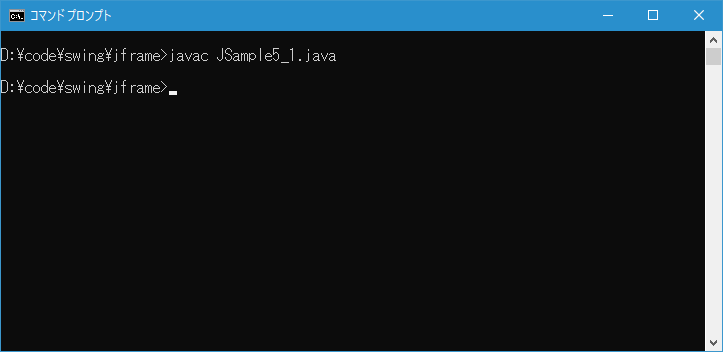
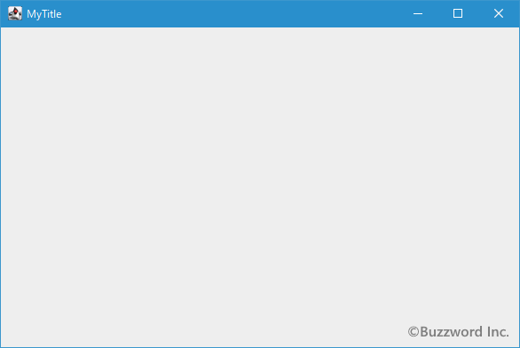

JFrameクラスを継承したクラスを定義する
ここまではフレームを作成する方法として JFrame クラスのオブジェクトを作成しましたが、今後フレームに対して独自のメソッドを追加する場合には JFrame クラスを継承したサブクラスを定義し、そのサブクラスのオブジェクトを作成するようにします。ここでは JFrame クラスを継承したサブクラスを定義する方法について簡単に解説します。
JFrameクラスを継承したクラスを定義する
Swing を使ったグラフィカルなアプリケーションを作成する場合、 JFrame をアプリケーションの土台として作成し、色々な部品を追加していくというのが基本的な流れとなります。ここまでに説明したメソッドによって最も基本的なフレームを作成することはできました。
import javax.swing.JFrame;
class Sample{
public static void main(String args[]){
JFrame frame = new JFrame("MyTitle");
frame.setBounds(100, 100, 600, 400);
frame.setDefaultCloseOperation(JFrame.EXIT_ON_CLOSE);
frame.setVisible(true);
}
}
今度より自由にフレームを利用するために JFrame クラスを継承したサブクラスを定義します。そしてフレームのサイズや位置などの初期化処理はサブクラスのコンストラクタの中で行います。例えば次のように JFrame クラスを継承した MyFrame クラスを定義します。
import javax.swing.JFrame;
class Sample{
public static void main(String args[]){
MyFrame frame = new MyFrame("MyTitle");
frame.setVisible(true);
}
}
class MyFrame extends JFrame{
MyFrame(String title){
setTitle(title);
setBounds(100, 100, 600, 400);
setDefaultCloseOperation(JFrame.EXIT_ON_CLOSE);
}
}
JFrame クラスのサブクラスである MyFrame クラスのコンストラクタの中でタイトルの設定やサイズの変更を記述しています。そして main メソッドでは定義したサブクラスのオブジェクトを作成し表示するいう手順を取っています。
JFrame クラスで用意されているメソッドをそのまま使うだけでプログラムが記述できるケースは少なく、基本的には JFrame クラスのサブクラスを作成した上で JFrameク ラスのメソッドを拡張したり新規のメソッドを追加していくことになります。
ただし、先ほどの方法では main メソッドが含まれる Sample クラスは単に main メソッドが存在するだけのクラスとなってしまいます。その為 main メソッドが含まれるクラスそのものを JFrame クラスのサブクラスにする方法が取られます。
import javax.swing.JFrame;
class Sample extends JFrame{
public static void main(String args[]){
Sample frame = new Sample("MyTitle");
frame.setVisible(true);
}
Sample(String title){
setTitle(title);
setBounds(100, 100, 600, 400);
setDefaultCloseOperation(JFrame.EXIT_ON_CLOSE);
}
}
今後は基本的な形としてこの記述方法を使っていきます。
サンプルプログラム
それでは簡単なサンプルプログラムを作って試してみます。テキストエディタで次のように記述したあと、 JSample5_1.java という名前で保存します。
import javax.swing.JFrame;
class JSample5_1 extends JFrame{
public static void main(String args[]){
JSample5_1 frame = new JSample5_1("MyTitle");
frame.setVisible(true);
}
JSample5_1(String title){
setTitle(title);
setBounds(100, 100, 600, 400);
setDefaultCloseOperation(JFrame.EXIT_ON_CLOSE);
}
}
次のようにコンパイルを行います。
javac JSample5_1.java

コンパイルが終わりましたら実行します。
java JSample1_1
次のようなフレームが表示されます。

記述の方法を変更しただけなので、現時点では表示されるフレームはこれまでとまったく同じです。
-- --
フレームを利用する上で JFrame クラスを継承したサブクラスを定義する方法について解説しました。
( Written by Tatsuo Ikura )

著者 / TATSUO IKURA
初心者～中級者の方を対象としたプログラミング方法や開発環境の構築の解説を行うサイトの運営を行っています。